Key
Synopsis and Descriptions withing- " " have a link attached to the source of the information, by clicking on it.
MOST THINGS WITH "" QUOTATIONS AROUND THEM HAVE LINKS ATTACHED TO THEIR SOURCE (not all but MOST) - This applies to ALL pages
ANIMATION Base Inspirations

WolfWalkers (30 October 2020)
Directed by: Tomm Moore and Ross Stewart.
Art director: Maria Pareja
My notes: it's a very stylized animation and the film
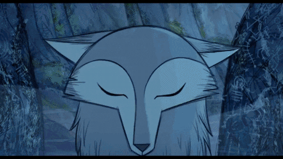
My notes
Audience reception:
"Wolfwalkers is an emotional and elegantly animated adventure, packed with vivacious visuals and lovely life lessons that resonate with audiences of all ages. Simply put: it's magical." - Rotten Tomatoes
(connecting with the fantasy themes)
The film's key for its use of colors, sound (mostly music)
how I am inspired by and how it will be used in my media:
the running scene with the song "Running with the Wolves" Sketchy scene and nature scenery, is very stylistic and interesting.
the natural scenery in this gives me scenery and background design inspiration as I hope to set in the woods/forest.
As well as the messyness
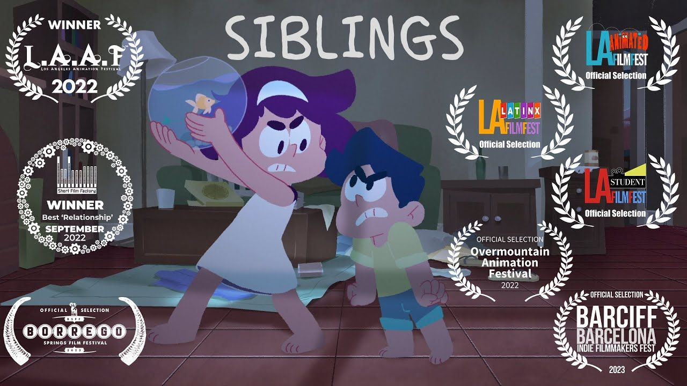
Siblings | Animated Short Film (ACCD Thesis)
( 26 Jun 2022)
https://youtu.be/TseT4C38UAg?si=tsQvJrPhwnIJt1Ik
Kenet Garcia Rojas - Director/Storyboard Artist/Character Animator/Compositor
Stuck at home during a rainy day, the oldest of two siblings provokes an argument that makes her face the circumstances of her own upbringing.
""Siblings" is a personal story that Kenet Garcia Rojas directed and developed during his last year at Art Center College of Design. With the production of this film he sharpened his directing skills, organized a production pipeline and learned to oversee a team of talented artists."
My Notes
Audience reception:
The short film has
1.2M views and 38k Likes,
the film is very empathized with by the audience.
how I am inspired by and how it will be used in my media: The simplistic yet symbolistic nature of the animation style I find inspirational, as Symbolism is a large key element I want to contribute to my end result.
important keys are Colour, and sound, as dialog is present but the type of dialog is more important then the actual words spoken.
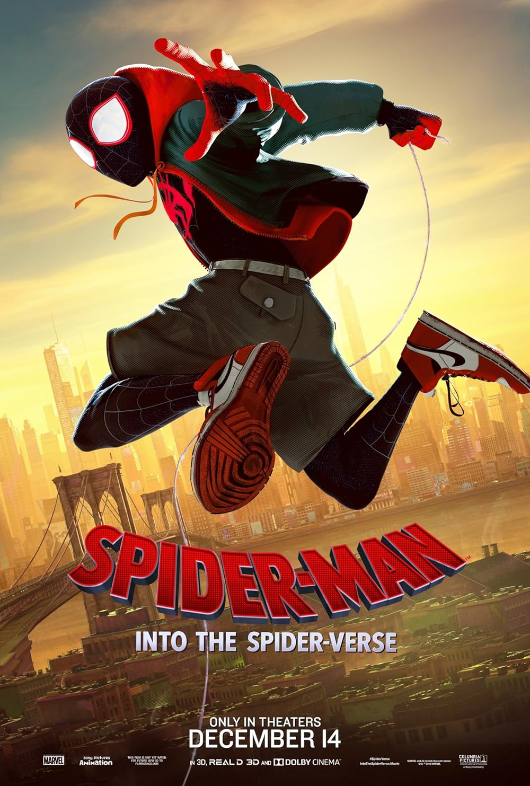
Spider man - Into the spider verse (14th December 2018)
Art director: Alberto Mielgo
Spider-Man: Into the Spider-Verse
Directed by Bob Persichetti Peter Ramsey Rodney Rothman
Screenplay by Phil Lord Rodney Rothman
Story by Phil Lord
Based on Marvel Comics (Stan Lee)
Film description: SPIDER-MAN: INTO THE SPIDER-VERSE follows the adventures of Brooklyn teenager, Miles Morales, and the limitless possibilities of the Spider-Verse, where more than one can wear the mask.
My Notes
Audience reception:
the Movie was a huge turning point in animation recently, as it showcased use of stylized animation, after many years of very cookie-cutter type work, in an attempt to replicate realism, This film was a testament against that and brought an uprise in new stylised film.
how I am inspired by and how it will be used in my media:
I particularly enjoy the visuals in this film, as it is a showcase of a new era of animation. the posing and perspective is a key component of this film specifically, and allow for extremes with action, because i want my film to be on the calmer side I wont have as much large movements and prospective shifts.


My notes
how I am inspired by and how it will be used in my media:
The use of little to no dialogue, and the robots' designs gave me inspiration for the character design of the robotic character I wish to work with as well as movement and pose.
the media (comics) is a great source of robotic inspiration designs.
key things are shapes, lack of duologue and background designs.
Colour/lighting
Key things or importance: Emotion though colours.
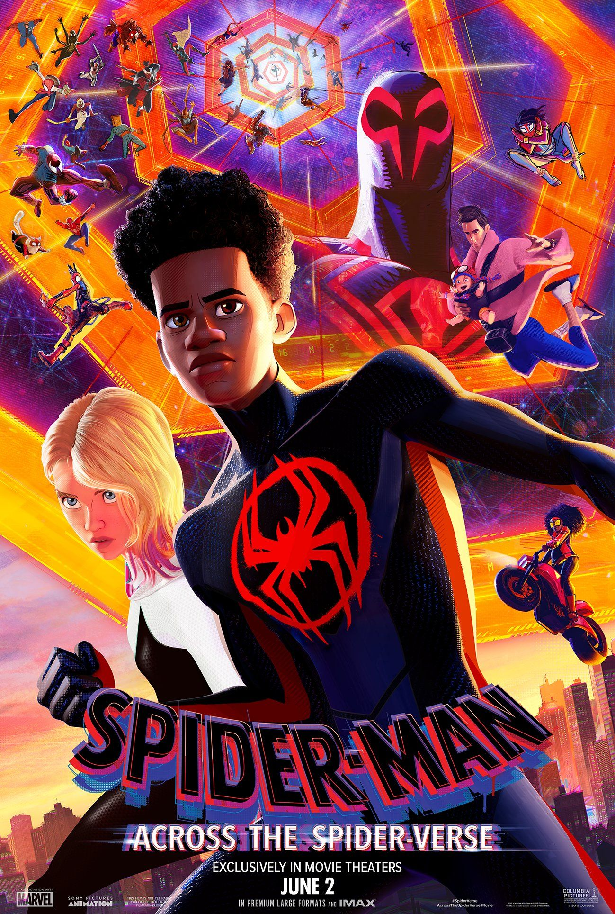
Spider-Man Across the spider Verse
Release date: 2 June 2023 (USA)
Directors: Joaquim Dos Santos, Justin K. Thompson, Kemp Powers
Sequel: Spider-Man: Beyond the Spider-Verse
Distributed by: Sony Pictures Entertainment Motion Picture Group, Sony Pictures Releasing
Based on: Marvel Comics

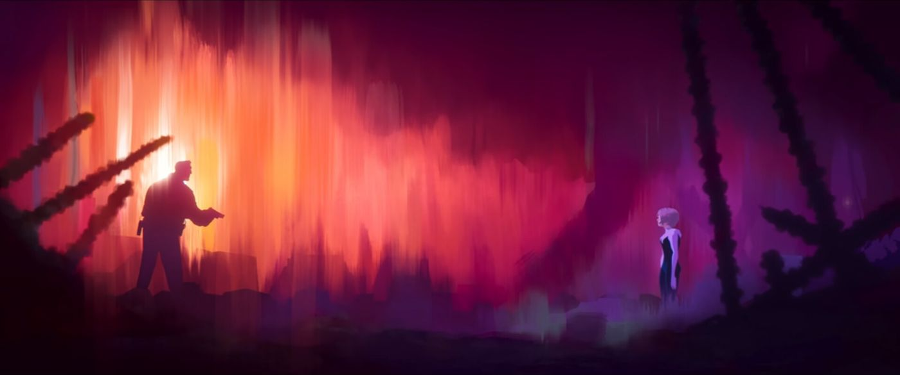
My notes
Audience reception: The audience was particularly drawn to these scenes in the film due to its watercolour, appearance and emotional nature, as colours changed and wrapped though the scenes, as the audience was presented with Gwen's dilemmas and struggles. the colours connecting with her father are seen as lighter and more pastel, while the scenes where she faces, grief, fear, and sadness all show a range of darker colours. Her father in particular usually being seen as the "light".
"Gwen's home dimension of Earth-65 is featured in Across the Spider-Verse. Described by the filmmakers as a "mood ring" reflecting Gwen's emotions, the world's colors and transitions are "not literal", with its details dependent on Gwen's feelings." Gwens Universe - Wiki
how I am inspired by and how it will be used in my media:
Particularly the scenes in Gwen's Universe, the use of colours to display the emotion of the scene and bring a bigger sense of feeling, without outwardly speaking, provides a higher connection to the audience, and is something im very inspired by and want to provide in my work, as I want to use Colours as a large point of silently providing feeling.

Fuelled (2 Dec 2021)
https://youtu.be/uVzT6D-yhZg?si=NCC1EgWTLVovWYfh
"Fuelled tells the story of a housewife on the path of revenge for her late husband."
Sheridan college 2021
Group mentor || Jason Par
Original music by || Sebastian Reuten
© KilledtheCat Productions
▪ Michelle Hao ▪ Fawn Chan ▪ Subin Jang ▪ Starlyn Lu ▪ Younghak Jang ▪ Jisoo Kim ▪ Georgia Quinn ▪ Emily Xu ▪ Eido Hayashi ▪ Daniel Blake ▪ Catherine Ivanhoff ▪ Aroona Khiani
The film inspires me from the art style to colour use.
The display of emotions, and camera movement.

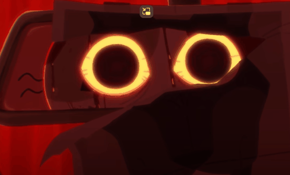
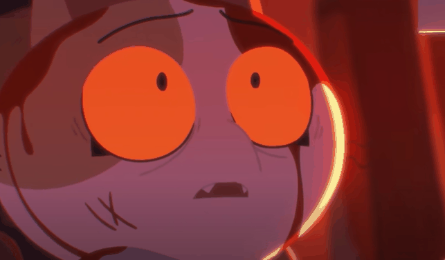

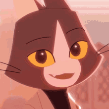
My Notes
Audience reception: The short if from 2 years ago with a like ratio of 662K and 9.6 million views with over 15 thousand comments.
come comments being:
----------------------
@ludoviajante
2 years ago (edited)
I think the key moment is when she realizes she can't get her love back. Even if she completes the revenge, it's all in vain. Interestingly, this message transcends the original meaning of the animation. All of us who have gone through a loss, be it grief or a breakup, know the emptiness of wanting to go back to a past that no longer exists. Part of the healing process is letting go.
----------------------
The main contention/story of the film was towards grief and revenge. the Audience gains a deep connection, as they are given aspects that allow you to empathise with the main character, yet also demonize the one who killed her spouce, by the end you see her become who she sought to destroy, this also brings up the idea that, you dont know the context or motives for such acts.
the film sparked discussion, on both fronts of grief, revenge and motive, while allowing connection and empathy by the connection of emotions though colour.
how I am inspired by and how it will be used in my media:
I have a love for the simple shame and use of colours.
As you can see, presented in the short Fuelled used a wide range of colours to help better fit the emotions presented in each atmosphere, allowing for better connecting to the feelings.
Pinks and lighter pastels are presented in the flashbacks of her lover, being seen as a bright and warm, time of love and happiness for the main character.
The blue scenes, show more of her on her venture to find the perpetrator that burnt her home down, killing her lover. you watch her, on her mission. its a lot darker and duller than those flashbacks and happy memories, the colours more mute and the sound quiet.
In the red scenes, watch as she devolves with grief, doing things that you watch her come to regret. the sequence below showcases this perfectly.
A moment of realisation, that she has the same mad look the killer had. coming to realise where this grief was taking her. A moment where she truly sees herself, and is afraid.
No words need to be said, there is little if any dialogue, but the photos sequenced showcase a lovely display of colour and emotion. She became who she wished to seek revenge on. she burnt down the petrol station. She most likely killed the guy.
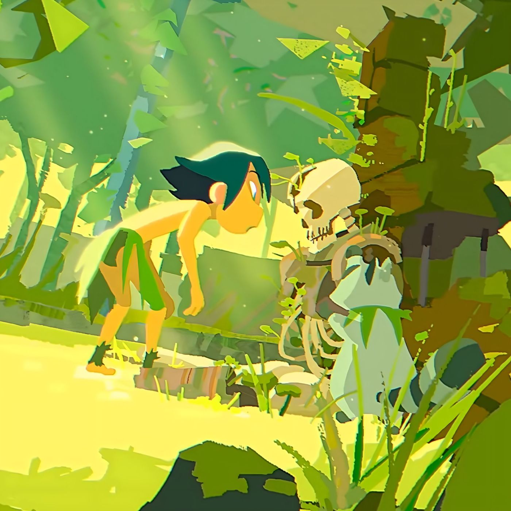
Resilience | Animated Short | CalArts Film
(13 May 2023)
https://youtu.be/F1QRZki3zb8?si=jI-][XiyF5bRi1x90n
Director: Yunie Choi
Sound designer, Mixer: Chanmi Ro
Mixer: Daniel Eaton
Composer: Fabrizio Aiello
"Resilience is about the ravaged nature finding its strength and gradually recovering alongside the vibrant resurgence of life."
My notes
Audience reception: The appreciated the detail as well as the changing of time, showing a progression from death and war to growth and Newlife.
how I am inspired by and how it will be used in my media:
This Short film is another representation, of colors in sequence and is used to set the tone and emotion of the current moment, for each setting/scene.
the colors and design are very simplified yet detailed.


Design

Could not find artist
My notes
The use of vibrant colours, and the contrast between nature and the robot, though the robot design is complex.
The combination of robotic and nature, was fact the first catalyst image that inspired a piece of art I did that led to the creation of this story idea. ⬇️

The Transformers: The Movie (1988)
Action/Sci-fi ‧ 1h 25m
My notes
Audience reception: The film and franchise are very well known and continue to have more movies made to this day.
how I am inspired by and how it will be used in my media:
This is one of the media I used when designing my character design. Not for style but to have a better look at structure and how robots could be animated.
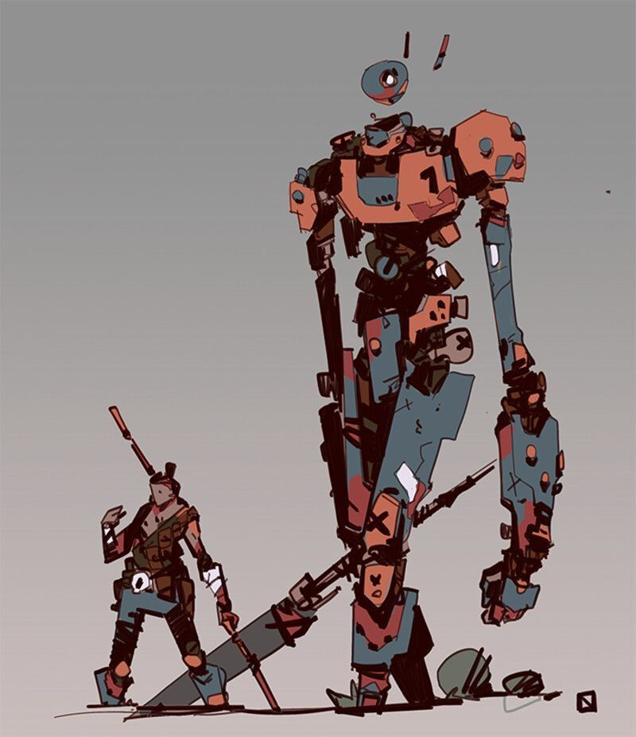
By Gareth Davies
My notes
how I am inspired by and how it will be used in my media:
The use of shapes allows for a more appealing look towards the shape and build of the robot.
though due to this being an animation, simplification while keeping personality would be Key.
The colors, and shape along with the use of solid shadows, are important attributes of this design, making it visually appealing as well as semi simplified.
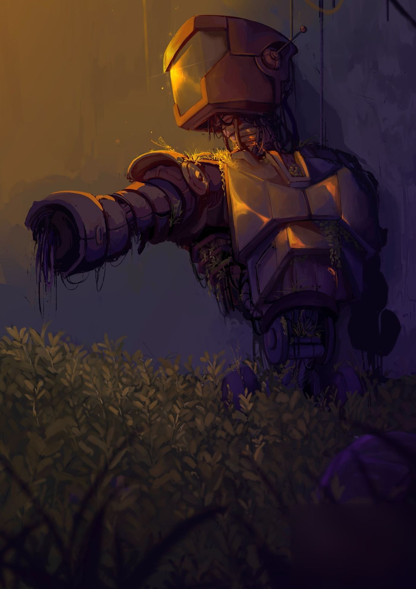
By me (Keeley)
my online handle is Crayan theef so that's why that's written there. (it can be found on my Tumblr, Pinterest, and X along with lots of my other work)
https://crayantheef.carrd.co
"1000 tragedies silenced by the light of a new day".
every development and marching of robotic Ai development, and the idea of "where does it end?" while also considering that "Nature always wins".

By Tom McDowell
My notes
how I am inspired by and how it will be used in my media: A key aspect of interest in this one specifically, is the way the shadows have been displayed and the head shape.
the use of shadows in that way to show shadow as well as save from as much detail.

God Tail
My notes
how I am inspired by and how it will be used in my media:
the use of more yellowed and dulled colours, along with aspects of shape (in terms of the head) and solid colours, though overly detailed, allows a more serious and robotic shape.
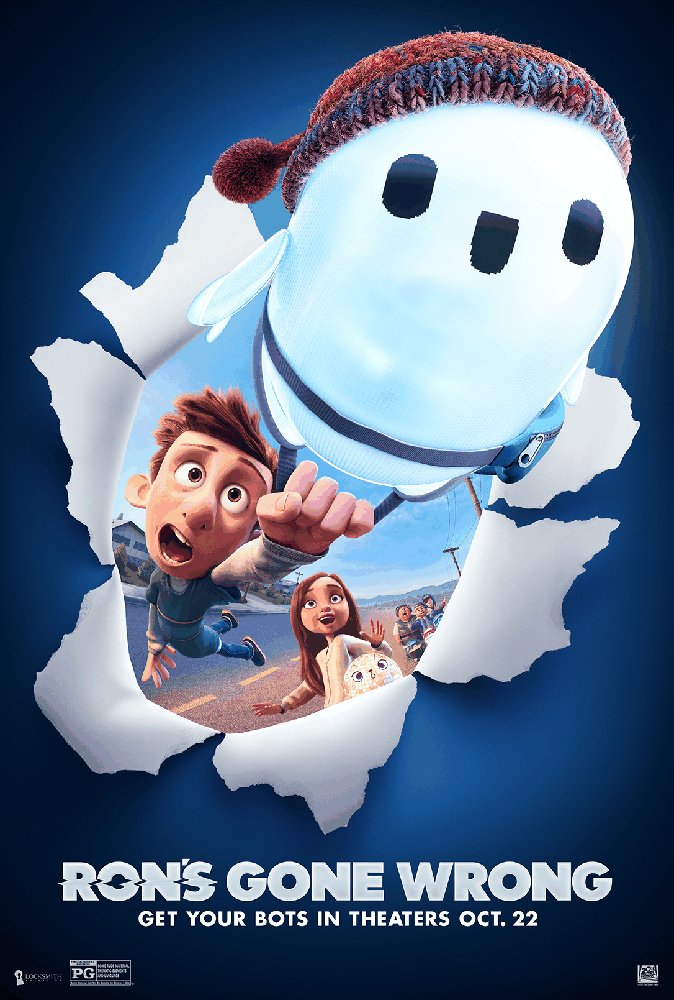
Ron's Gone Wrong (22nd of October 2021)
IMDb - 7.1/10 Rotten Tomatoes - 81% Metacritic - 65%
My Notes
A small robot that malfunctions and becomes the best friend of a boy who struggles with being different.
The friendly ness of the robot as well as the more circulator shape make the design more appealing.
though I would not work with the duologue as this character can talk, the more rounded shape had an easier time moving.
though this media is 3D animation not 2D.
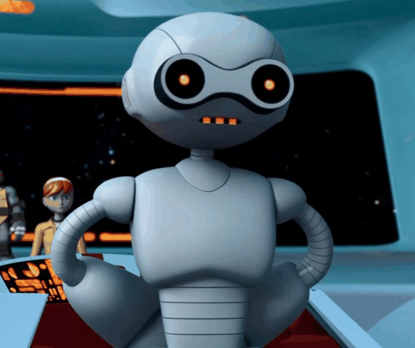
the Fugitoid (specifically TMNT 2012)
a character from TMNT and has been in many iterations.
(2003, 20012 - tv shows 1987, 2007, 2003 - video games and has shown up in the IDW comic)
He was a pre-TMNT Mirage Studios character who later became integrated into the Ninja Turtles' universe and befriended them.
The Fugitoid is a fugitive android, he was originally Professor Honeycutt from a different planet, then became The Fugitoid and inhabits the body of a robot.
His structure and design are quite blocky but simple, it allows for a great example of something that still appears robotic but with limited detail.
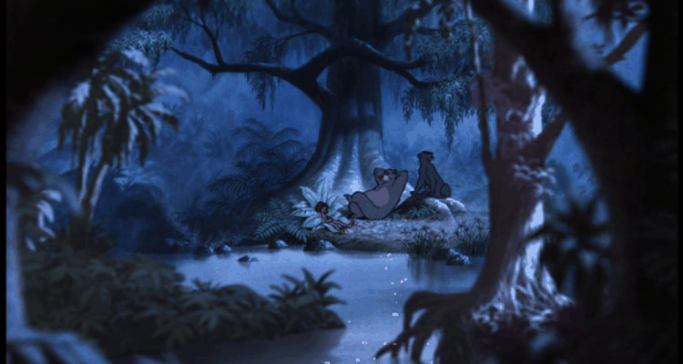
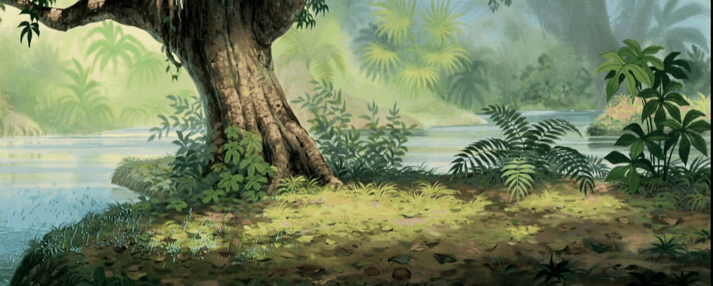
The Jungle Book (1967) backgrounds
Director- Wolfgang Reitherman
Naturistic backgrounds that hold a great contrast of dark and light. mostly using cooler tones.
I do not aim for my own backgrounds to be to these depths but they colour scheming does provide inspiration towards, colours to use as well as set ups and simple type reference samples towards 2D jungles drawn, for past animation.
The details in these are phenomenal, allowing a calm and eye-catching background that integrates the characters as well as provides detail and beauty without taking away from the characters.
One of the good things about backgrounds is that they can be used multiple times, allowing for more detail to be implemented into those backgrounds.
camera shots
Camera position plays a large roll in the way the audience, views and perceived the scenes and characters, withing those scenes.

My Notes
Audience reception:
The main contention/story of the film was towards grief and revenge. the Audience gains a deep connection, as they are given aspects that allow you to empathise with the main character, yet also demonize the one who killed her spouse, by the end you see her become who she sought to destroy, this also brings up the idea that, you dont know the context or motives for such acts.
the film sparked discussion, on both fronts of grief, revenge and motive, while allowing connection and empathy by the connection of emotions though colour, as discused earlier, though the film was too, visually appealing due to camera shots being simple and clam to fit the growing intensity of the short film.
how I am inspired by and how it will be used in my media:
The scenes and camera positions of the short film i find important from, the way the way scenes switch
fulled (as spoken about earlier)
I further find key things to draw from, camera movement being a large focus point.
the way the camera moves to account for where the character is looking without too much prospective or movement to transition to new shots.
In the first give you get a wide/medium shot, then a close-up where the character moves to look in the station, changing back to another wide/medium shot.
The second Gif you get a high angel shot of the character looking up, a venerable sort of shot, then it moves to a low angle shot, meant to have you feel intimidated by the character, then an extreme close-up on the eyes, this is later on used when the character looking back in the mirror with the same eyes, so the extreme close allows for an important moment to be noted.

KitBull (PIXAR Short) (19 Feb 2019)
https://youtu.be/AZS5cgybKcI?si=gDxts3MsRpoHnBE7
The short was directed and written by Rosana Sullivan
"a fiercely independent stray kitten and a pit bull. Together, they experience friendship for the first time. "

My Notes
Audience reception:
This is a Pixar short film, one that is very beloved for, the characters, and texture, im focusing on camera movements and effects.
how I am inspired by and how it will be used in my media:
The use of camera shots and transitions similar to fuel, which is a type of movement I want to display.
The blur is used to keep your focus on the cat seen in the GIF
I love the use of still set scenes and though there maybe minor camera movement, there is little to none and the movements are not extreme, allowing a sense of calm to the scene.
Sound
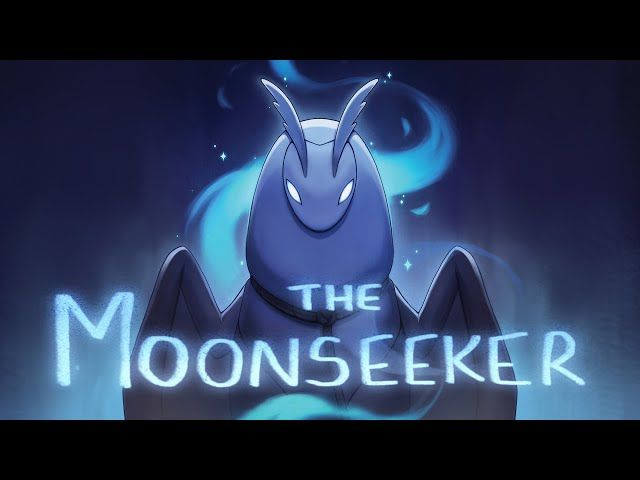
The Moonseeker (24 Jul 2023)
https://youtu.be/_q7BfhmZ56E?si=Bhs_VP3cXJnt69Jl
"A grieving father goes to extremes to be reunited with his dead daughter."
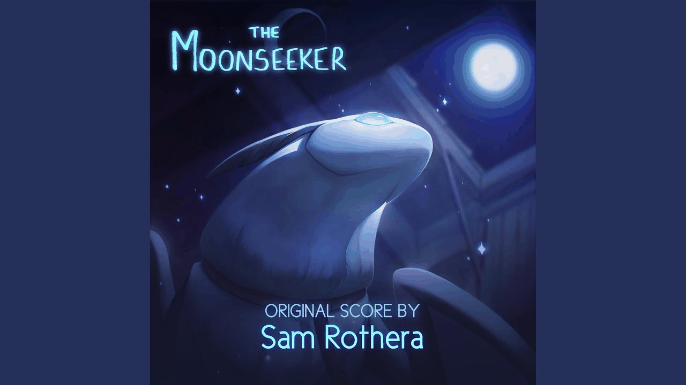
My Notes
Audience reception:
438K views 36K likes (well recieved)
the top comment being
-@citruslllad
7 months ago
i love how you can understand the story through visual implications alone, no big flashbacks or dialog needed. the man’s daughter died and he was using the moonseeker to see her again, but by keeping it trapped in the barn, he was inflicting his own pain on the moonseeker’s parent. the fire was a result of him being able to move on, and by letting the moonseeker go and reunite with it’s family, it represented the man letting go of his daughter and finally being able to move on with his life " -
showing a great and simple dissection of the short.
how I am inspired by and how it will be used in my media:
Music and sound is a very important parts of short films, as sound can be used with dialog to give further context or messages, or to do things like build suspense as the sound increases.
I want to use minimal sound. (I still want to use sound) but mostly rely on visuals rather than a script.
Moon seeker relies mostly on visuals, while still including minimal sound to add in areas needed. The short film is on the calmer side for the majority of it, allowing for emotion and storytelling without duolog. The bulk of the sound used is instrumental, allowing to an emotional reaction where needed.
Moonseeker also shows a good example of suspenseful music when needed, as the speed seems to increase, causing a rise in heart rate as things go wrong, the music calms back down at the end of the short film.
Animation process and key technique
My notes
This video goes through history of animation and the development of multiple different types of animation, as well as the steps that went towards animation types, such as 2d. one of those being the creation of 2d paper animations, which have quite similar steps, that now work towards modern type animation, as it moved more onto software.
the video goes into the discovery of the 12 principles of animation
this being:
-Squash & Stretch -Anticipation
-Staging -Straight ahead & Pose to pose
-Follow through & Overlapping action -Slow in & Slow out
-ARC -Secondary action
-Timing -Exaggeration
-Solid drawing -Appeal
Another important aspect of animation history is Rotoscoping.
using live footage to get more realistic movements, something still prominent today. (also similar to moto tracking)
Often animations are done in 2s and 3s, having a new frame every 2 to 3 frames.
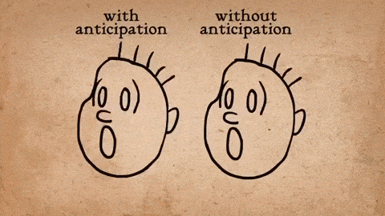
My notes
Anticipation, builds up to the movement, giving you awareness of the movement that is about to occur.
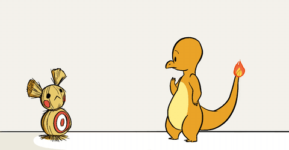
My notes
Staging is an important key thing as it sets up the scene
aspects of Staging include:
-Acting -Setting
-Timing - Camera
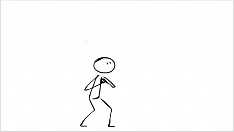
My notes
Slow in and slow out allow for smoother movements.
having a slow start that speeds up, then slows down at the final frames of the movement.

My notes
Appeal is important as it makes the animation more eye-catching, as well as on occasion it can make the animation easier as they character can be structured into simple shapes.
Codes

Conventions

MEDIA requirements
Consume products of the media form that you will be producing that relate to what you intend to produce - as many possible/relevant/necessary. Make sure that they are relevant to what you are planning on producing.
This might include:
○ Products of the same genre
○ Products which relate to the same theme
○ Products of a style that you might want to replicate
○ Products that form a similar narrative structure
2. From these products, collect examples (images, photos, screenshots, videos, descriptions) of the use of codes and conventions (use the media literacy slide to guide you) that you might apply in your production - at least 8-10. This might include:
○ Use of camera
○ Use of lighting
○ Use of editing
○ Use of sound
○ Narrative structure
3. Include each code or convention in your Google Site with an image, video or audio link and label their sources. For each, analyse:
○ How the product engages an audience.
○ Describe the meaning that is conveyed to an audience.
○ How would you use the code/convention to engage audiences?
○ How audiences would use the code/convention to read meaning?
○ How you could incorporate the code/convention into your own production design.
Remember to cite each source (title, artist, link, date accessed)